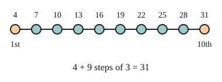

Part of Arithmetic Sequences. Answer in the chat (1: ..., g: c), add sure or guess after any answer, and say done when finished.
Last time: 4, 7, 10, 13, ... keeps adding 3. What is its 10th term? You said b) 34. It is a) 31.

To jump to a far term, you do not want to list every term on the way. The first term is there before any step, so the 2nd term has had 1 step, the 3rd has had 2, and the nth has had n - 1 (notes 2):
a + (n - 1)d
Q1. What is the 25th term of 6, 11, 16, ...?
126 (sure)
Right: 6 plus 24 steps of 5 (notes 2).
Q2. A sequence starts at 50 and takes 3 off each time. What is its 12th term?
17 (sure)
Right: 11 steps of -3 from 50 (notes 1, 2).
Q3. Sam says the 8th term of 2, 5, 8, ... is 2 + 8 x 3 = 26. What is wrong?
the first term is 2 with no step yet, so the 8th term has only had 7 steps: 2 + 7 x 3 = 23 (sure)
Right: the first term takes no step, so the 8th has n - 1 = 7 (notes 2).
You can now find any term of an arithmetic sequence.
How many terms are in 3, 7, 11, ..., 43?
b (guess)